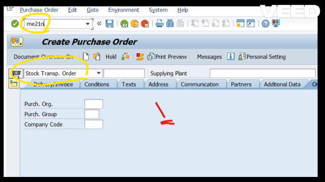
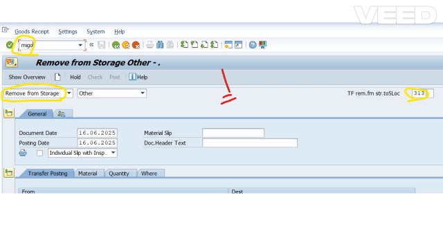
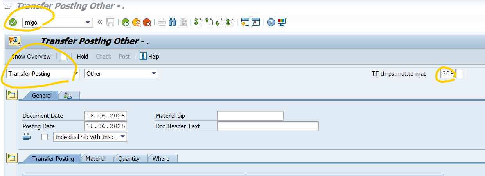
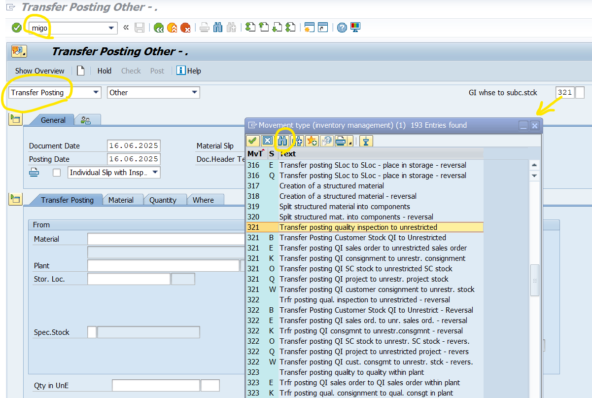

عمليات في المشتريات SAP MM Processes
1. دورة المشتريات Procurement Cycle

هذي هي الدورة الشاملة في ادارة المشتريات...هذي هي الدورة الشاملة في ادارة المشتريات (كشكل عام)
مهم اننا نفهم كيف تتم الدورة وتسلسلها بالترتيب وايش العملية بكل خطوة
..
اولا انشاء طلب المهمات Purchase Requisition اللي نحدد فيه المادة اللي نبي نطلبها (بعد مانكريتها وننشئها) وكميتها وو الخ..
بعدها لازم نسوي Request For Quotation او طلب مناقصة للحصول على افضل سعر لنا ( بعد مانكريت الموردين وننشئهم)
بعد ذلك نستعرض قائمة الاسعار Price Comparison List ثم ننشئ المناقصة Create Quotation
ثم اخر شيء نسوي طلب انشاء المناقصة كتاكيد Create Request for Quotation
بعد ذلك ننشئ عقد كميات او عقد قيمة (خطوة غير الزامية) Create Contract (Value- Quantity)
بعد ذلك ننشئ اتفاقية الجدولة Scheduling Agreement (خطوة غير الزامية )
بعد ذلك ننشئ طلب شراء Purchase Order من طلب المهمات او طلب شراء جديد مباشر
ثم نقوم بعملية الاستلامة المخزنية Goods Receipt
واخيرا نقوم بالتاكد من الفاتورة والدفع Invoice Verification
هذي هي دورة المشتريات بشكلها العام والبسيط هي خطوتك الاولى في فهم ادارة المشتريات
2. البيانات الرئيسية Master Data
البيانات الرئيسية تطرقنا لها من قبل في الباب التعريفي بموديول ادارة المواد
زي ماقلنا هي بيانات اساسية نعبيها عشان نسوي دورة المشتريات اللي ذكرتها قبل شوي وهي على 3 انواع
1- بيانات المواد الاساسية Material Master Data (MM01)
2. بيانات الموردين الاساسية Vendor Master Data (BP)
3. سجل بيانات الشراء Purchase Info Record (ME11)
مانقدر نقوم باي طلبات او عمليات شراء بدون مانسوي البيانات الرئيسية يعني بمعنى اخر هي الكل بالكل
3. طلب الامانات Consignment
هي عملية تصير بين المشتري وبين المورد بحيث يوفر لك المواد والبضائع في مخازن المشتري لكنها تبقى ملك للمورد بحيث تسحب منها حسب الرغبة وتستخدمها والدفع يتم فقط عند السحب من البضائع.
يوجد طريقتين لتنفيذ طلب الامانات:
الطريقة الاولى:
1. انشاء سجل معلومات الشراء Purchase Info Record
2. انشاء طلب شراء PO مع وضع علامة صح عند خيار Consignment
3. استلامة مخزنية بالرجوع الى طلب الشراء Goods Receipt with Reference to PO
4. ترانسفر بوستنق Transfer Posting with Reference to Other مع حركة 411K
5. التسوية Settlement باستخدام MRKO
الطريقة الثانية:
1. انشاء سجل معلومات شراء Purchase Info Record
2. انشاء طلب شراء PO
3. استلامة مخزنية Goods Receipt
4. اخراج مخزني Goods Issue
5. التسوية MRKO

4. طلب نقل البضائع STO
ويكون على نوعين
النوع الاول : نقل بضائع من فرع الى فرع او مصنع الى مصنع Plant to Plant------
ويكون بالطريقة التالية:
1.انشاء طلب شراء من نوع (PO UB STO)
2. اخراج مخزني بالرجوع لطلب الشراء مع حركة 351
(Goods Issue with reference to PO MvT 351)
(مهم اختيار الحركة جدا)
3.استلامة مخزنية بالرجوع الى طلب الشراء مع حركة رقم 101
(Goods Receipt with reference to PO MvT 101)

النوع الثاني : نقل بضائع من مستودع الى مستودع Storage Location - Storage Location------ ويكون بالطريقة التالية :1.ازالة من - بالرجوع الى طلب الشراء (Remove From with Reference to PO)
2.استعراض للتاكد (display)
3.وضع بالمخزن (Place in Storage)

5. تغيير حالة التسجيل Transfer Posting
تكون على نحوين :
الاول وهو تغيير حالة مادة الى حالة اخرى Material to Material Condition باستخدام حركة رقم 309
(MvT309) من داخل الاستلامة المخزنية

الحالة الثانية تحول نوع البضاعة من نوع الى نوع باختيار الحركة المرادة بالـ (Key word)
مثلا تبي تحول نوع البضاعة من Unrestricted Stock To Blocked Stock تغيرها بالبحث وتحدد الحركة ببساطة

6. الجرد اليدوي Physical Inventory
وله 3 طرق المطلوب منك طريقة وحده لكن جبت لك كل الطرق واختر مايناسبك منها
الطريقة الاولى بالخطوات التالية:
1.انشاء مسودة جرد مخزني Create Physical Inventory Document (MI01)
2.طباعة مسودة الجرد Print Physical Inventory Document (MI21)
3. ادخال العد Enter the Count (MI04)
4.اعادة العد (عملية اختيارية في حالات الشك والتاكيد) (MI11)
5.تسجيل الفارق Post Difference (MI07)

1.انشاء مسودة جرد مخزني Create Physical Inventory Document (MI01)
2.طباعة مسودة الجرد Print Physical Inventory Document (MI21)
3. القيام بالعد وتسجيل الفارق بنفس الوقت Count and Post the Difference (MI08)

1. انشاء مسودة جرد مخزني وادخال العد وتسجيل الفارق بخطوة واحدة
Create Physical Inventory Document , Enter count and Post the difference (MI10)